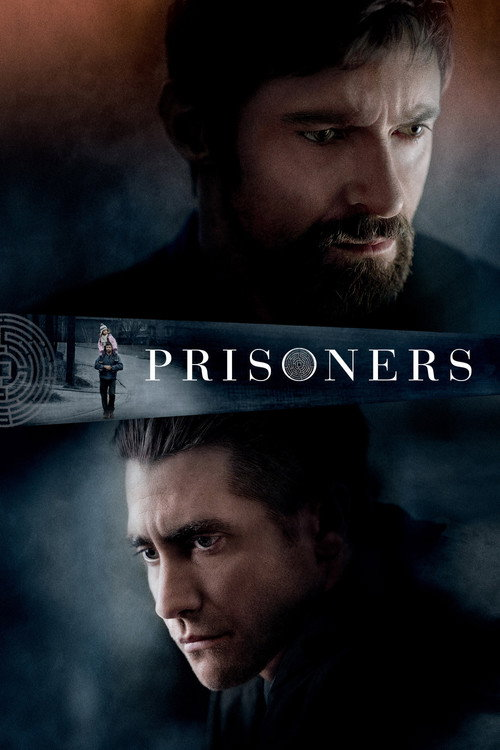
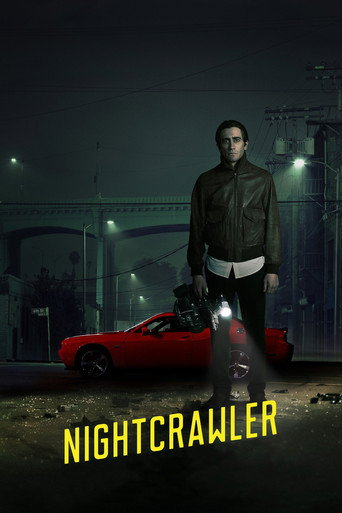
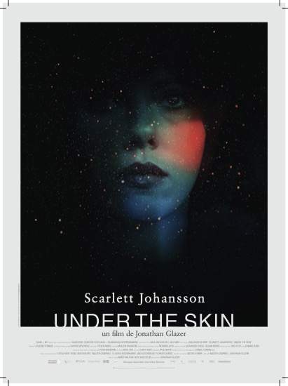

Valeur sûre
Prisoners
Deux fillettes disparaissent. Alors que l’enquête piétine, l’un des pères décide d’agir seul.
Pourquoi ce choix ?
Exemple de justification · Une enquête sous pression pour une soirée de suspense.
Prototype visuel · données de démonstration
Une envie, une ambiance.
Le reste attendra.

Valeur sûre
Deux fillettes disparaissent. Alors que l’enquête piétine, l’un des pères décide d’agir seul.
Exemple de justification · Une enquête sous pression pour une soirée de suspense.

Pépite
Un vidéaste indépendant traque les faits divers dans les rues de Los Angeles.

Wildcard
Une femme mystérieuse sillonne les routes d’Écosse.